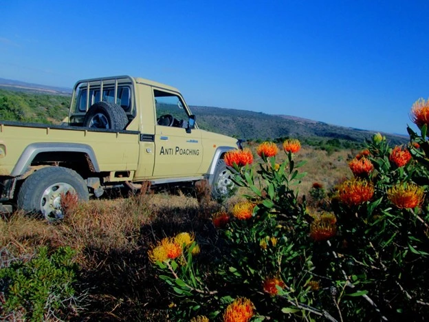

Wrong place, Wrong time
A million things start flying through your mind when you are moving towards trouble

There are a few things in life that one would consider private moments. But I later learnt that what I may consider a moment of privacy, an elephant does not!
After a hot and long day of searching for animals in the Mopani woodlands, we stopped for a break and some food.
Just after setting up and readying cooking fire, Nature decided it was time for me to step away.
With the large amount of noise and movement on our side , I had assumed that most, if not all, animals nearby would have left. So without giving it a second thought, I grabbed some toilet paper and took a short walk, leaving behind my rifle and bag.
Now for a reason that I shall leave the reader to ponder on, I have found it is best to completely remove one’s trousers when attempting this, as it generally makes life easier at that moment in time.
After finding a suitable tree, far enough for privacy, but not too far incase of an emergency…
For their size, elephants can be amazingly quiet and graceful. On the other hand, they can be extremely intimidating, even terrifying when the need arises.
Deep in contemplation with my tree, I noticed a vague shadowy movement through the thickets in front of me. I could not yet make out what it was but I knew it was moving towards me. I felt the hairs on the back of my neck prickle and I knew something was wrong.
As luck would have it, or should i say bad luck, I found myself in a compromised position; no pants on and what I was sure was danger ahead. I had no choice but to wait and see what was about to unfold.
The few seconds it took for this shadowy figure to emerge from the thickets felt like an eternity. As the figure came closer, I realised that I was no more than 40m from a large female tuskless elephant with a young one in tow.
We locked eyes for a moment. I watched as the mother moved forward protectively; but trouble was Brewing as she did not stop. I watched her twist her trunk up between her jaw and her chest and knew I had to get away.
Now generally one should not just run when encountering animals as this can escalate situations rather than staying put. But I knew I did not want to die trying to take a s#it.
I still cannot figure out how I managed to cover the distance that I did, but without second thought I tore through the bushes straight to where we had set up
Now it was only when I stopped running and saw that the elephant had not pursued me, that it dawned on me that I had left my pants behind. With a sheepish grin, I excused myself from my boss and his client, whom I had run into, and went to find another pair of pants.